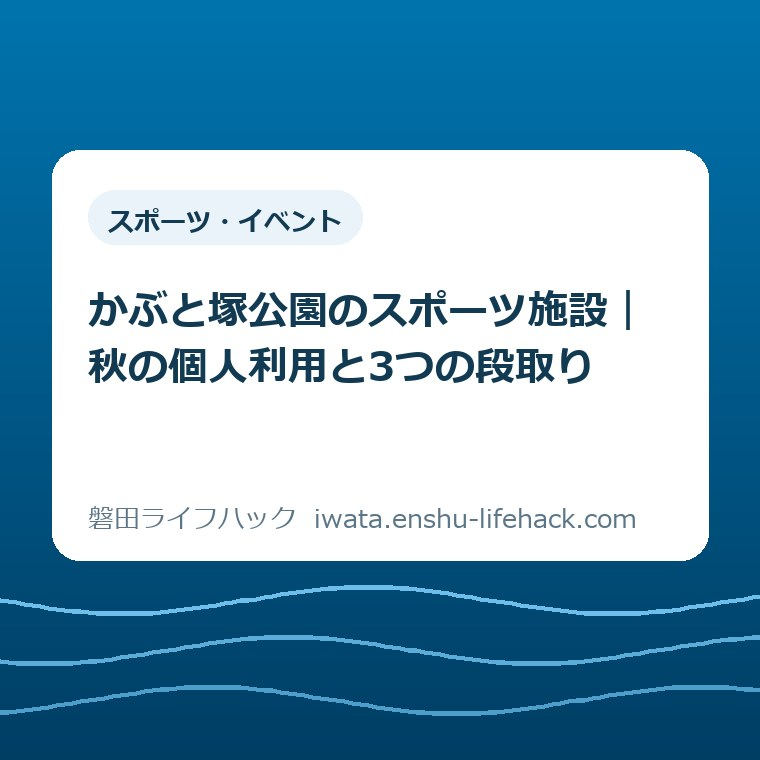
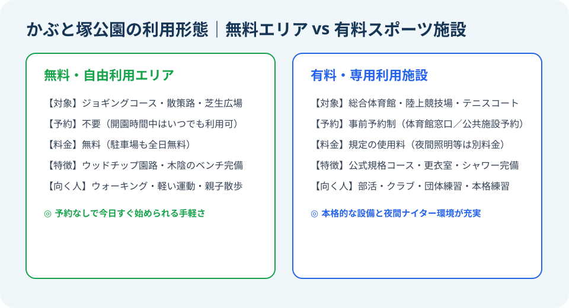
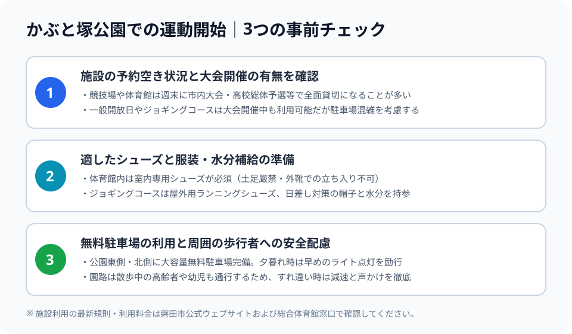

スポーツ・イベント
かぶと塚公園のスポーツ施設｜秋の個人利用と3つの段取り

この記事の要点
Q. かぶと塚公園の陸上競技場やジョギングコースは、個人でも予約なしで使えますか？
A. 外周のジョギングコースや芝生広場は予約不要・無料でいつでも自由に走れます。一方、陸上競技場や総合体育館、テニスコートなどの有料専用施設は事前予約または受付での利用申請が必要です。大会貸切で使えない日もあるため、事前に体育館窓口で一般開放予定を確認するのが確実です。
秋の涼風とともに、体を動かしたくなる季節の到来
9月中旬を過ぎると、夏の厳しい猛暑がようやく落ち着きを見せ、朝晩を中心に爽やかな秋の風が肌をなでるようになります。「少し運動不足を解消したい」「休日に家族や子どもと一緒に体を動かしたい」「ジョギングやウォーキングを習慣にしたい」と思い立つ市民の方も多いのではないでしょうか。
大石浩之（磐田市／不動産業・宅地建物取引士）です。日頃から磐田市内各地の土地や住宅の現地調査で歩き回っていると、住まいの近くに安心して運動できる拠点があることの価値を日々強く実感します。健康の維持はもちろんのこと、休日のリフレッシュや多世代の交流を支えるスポーツ環境は、街の暮らしやすさを測る極めて重要な要素です。
磐田市内で本格的な運動を楽しめる公共施設といえば、見付地区に位置する「かぶと塚公園」が筆頭に挙げられます。広大な敷地の中に総合体育館、全天候型陸上競技場、テニスコート、多目的広場、そして緑豊かなジョギングコースを備えた、磐田市のスポーツの中核拠点です。
しかし、普段あまり運動施設を利用しない市民の方からは、「部活やクラブチーム専用の施設ではないのか」「個人が一人で行っても走れるのか」「予約や利用料金はどうなっているのか」といった疑問や戸惑いの声もよく耳にします。
本記事では、2026年9月19日時点で磐田市公式ウェブサイトに公開されている一次情報に基づき、かぶと塚公園のスポーツ施設を一般個人や家族連れがスムーズに使いこなすための全体像と具体的な利用手順を詳しく解説します。無料で自由に使えるエリアと有料予約施設の線引きを整理し、秋の休日に安全かつ快適に運動を始めるための3つの段取りをまとめました。

かぶと塚公園の全体像と充実した施設ラインナップ
かぶと塚公園（磐田市見付4075-1）は、古代の史跡である兜塚古墳を抱く緑豊かな丘陵地に整備された、面積約13.4ヘクタールにおよぶ広大な運動公園です。豊かな樹木に囲まれた環境の中で、本格的な競技スポーツから市民の気軽な健康づくりまで幅広いニーズを受け止めています。
磐田市公式ウェブサイト「かぶと塚公園」および「かぶと塚公園総合体育館」の施設案内によると、公園内には以下の主要施設が整備されています（2026年9月19日確認）。
まず屋内スポーツの中核となる「かぶと塚公園総合体育館」です。メインアリーナはバスケットボール2面、バレーボール3面、バドミントン10面が取れる堂々たる規模を誇り、冷暖房設備や観客席も整っています。卓球室、トレーニング室、弓道場、武道場、さらには会議室や幼児プレイルームも完備されており、天候に左右されずに多様な屋内種目を楽しむことができます。
屋外には、日本陸上競技連盟公認の「陸上競技場」が広がっています。全天候型400mトラック8コースを備え、中央の天然芝フィールドではサッカーなどの競技も行われます。夜間照明設備（ナイター設備）が設置されているため、日没後でも明るい環境で練習を行うことが可能です。
さらに、砂入り人工芝（オムニコート）の「テニスコート」や、少年野球・ソフトボールなどができる「多目的広場」、子どもたちが遊具で楽しめる「ちびっこ広場」、そして公園全体を取り囲むように巡らされた「ジョギングコース・散策路」が配置されています。
このように多彩な施設が1か所に集約されているため、競技志向のアスリートだけでなく、小さな子どもを連れたファミリー層や、健康維持に励むシニア層まで、あらゆる世代がそれぞれのペースで運動に親しむことができるのが大きな特徴です。
予約不要・無料で誰でも走れるジョギングコース
一般の市民が最も手軽にかぶと塚公園を活用できるのが、園内を周回するジョギングコースと散策路です。このコースは特別な予約手続きや利用料金の支払いが一切不要で、公園の開園時間内であれば誰でも無料で自由に利用することができます。
ジョギングコースの大きな魅力は、足腰への負担を軽減する舗装やウッドチップ敷きの区間が設けられている点です。アスファルトの硬い道路を走り続けるのと比べ、着地時の衝撃が大幅に和らげられるため、膝や足首に不安を抱える初心者やシニアのランナーにも非常に優しい環境となっています。
コースの要所には距離表示の看板が設置されており、自分がどのくらいの距離を走ったかを客観的に把握しながらペース配分を組み立てることができます。1周あたり約1km前後の手頃な距離感であるため、「今日は2周ウォーキングしよう」「次は3周軽くジョギングしてみよう」と、体調に合わせて無理のない目標設定が可能です。
また、コースの多くは豊かな松林や広葉樹の木陰を縫うように通っているため、直射日光を適度に遮ってくれます。風通しも良く、秋の心地よい空気を感じながら深呼吸して走る爽快感は、街中の道路では決して味わえない運動公園ならではの贅沢です。コース沿いには定期的に木製ベンチや水飲み場が配置されており、疲れたらいつでも足を止めて休憩できる安心感もあります。
有料専用施設の利用ルールと個人利用のポイント
一方で、陸上競技場のトラックや総合体育館のアリーナ、テニスコートなどの有料施設を利用する場合には、所定の利用ルールと手続きに従う必要があります。
これらの施設は、基本的に「専用利用（団体による貸切予約）」と「個人利用（一般開放枠での共同利用）」の2つの区分で運用されています。部活動の練習や各種大会、地域団体のスポーツイベントなどで専用利用の予約が入っている時間帯は、一般の個人が立ち入って利用することはできません。
個人利用を希望する場合、最も確実な手順は「事前に体育館の窓口または電話で当日の一般開放スケジュールを確認すること」です。磐田市公式ウェブサイトや体育館の掲示板等で利用状況が案内されていますが、週末は大会等で終日貸切になるケースも少なくありません。「せっかくウェアを着て出かけたのに、大会で全面貸切だった」という空振りを防ぐためにも、事前の確認が不可欠です。
利用当日は、総合体育館の受付窓口で利用申請書を記入し、券売機で規定の利用券を購入して窓口に提示します。利用料金は非常にリーズナブルに設定されており、市民の誰もが気軽に施設を利用できるよう配慮されています。
特に総合体育館を利用する際に絶対に忘れてはならないのが、「室内専用運動シューズの持参」です。土足での入場は厳禁であり、外履きのスニーカーを拭いて代用することも認められていません。靴底が綺麗で室内用に指定された専用シューズを必ずシューズバッグに入れて持参してください。また、体育館内には更衣室やコインロッカー、シャワー室（有料または無料）も整備されているため、汗を流して着替えてから帰路につくことができます。

秋の運動開始に欠かせない「3つの段取り」
秋の休日にかぶと塚公園を訪れて気持ちよく運動を始めるために、保護者や利用者が事前に押さえておくべき段取りは以下の3点に集約されます。
段取り1：大会・貸切スケジュールの事前確認
かぶと塚公園の競技場や体育館は、秋になると中学校・高校の新人戦や市民スポーツ祭、各種競技の秋季記録会など、公式大会の開催が集中します。大会開催日は周辺道路や駐車場も混雑するため、磐田市の公式案内や体育館窓口でスケジュールをチェックし、混雑のピークを外した時間帯を選ぶのがスマートです。
段取り2：シューズと服装の適切な使い分け
屋外のジョギングコースを走るのか、体育館のアリーナを使うのかによって準備する装備は完全に異なります。外履きランニングシューズと室内履きシューズを明確に分け、着替えのタオルと十分な水分を持参しましょう。秋口は運動後に急速に体が冷えるため、羽織れるウィンドブレーカーを1枚用意しておくと風邪の予防になります。
段取り3：無料駐車場の利用マナーと歩行者への安全配慮
公園には東側や北側に大規模な無料駐車場が完備されていますが、夕暮れ時は駐車場内も暗くなります。ランニングや散歩から車に戻る際は、歩行者や小さな子どもに十分注意して徐行運転を徹底してください。また、ジョギングコース上でも散歩中のシニアや犬の散歩の方とすれ違う際は、スピードを落として距離を空ける優しいマナーを心がけましょう。
良い点は、広大な無料駐車場と充実した緑陰環境
磐田市のスポーツ環境において、私が宅地建物取引士として、また一人の市民として高く評価している「良い点」は、市街地に近接した立地でありながら、広大な無料駐車場と豊かな緑陰環境が見事に両立している点です。
都市部のスポーツ施設では、駐車料金が有料であったり駐車台数が極めて少なかったりして、車社会である遠州地方の生活実態に合わないケースが散見されます。しかし、かぶと塚公園は数百台規模の広々とした無料駐車場が複数箇所に整備されており、思い立った時に自家用車でふらりと立ち寄って運動を始めることができます。駐車料金を気にすることなく、じっくりとストレッチやウォーキングに時間を割ける環境は、市民にとって大きな恩恵です。
また、公園全体を包み込む自然環境の豊かさも見逃せません。兜塚古墳の丘陵を取り巻く松林や豊かな木々は、夏場には強い日差しを遮る天然のサンシェードとなり、秋には心地よい木漏れ日と静けさを提供してくれます。人工的なコンクリートの陸上トラックだけでなく、土や落ち葉の匂いを感じながら走れる自然豊かなコースが同じ敷地内に共存していることは、都市型公園として非常に贅沢な設計だと感じます。
さらに、隣接して遊具が揃うちびっこ広場があるため、親が交代でジョギングを楽しみながら、もう一方が子どもを遊具で遊ばせるといった「子育て世帯に優しい多機能な使い方」ができる点も極めて優れた魅力です。
注文したい点は、個人利用枠の分かりにくさとWEB予約の制限
一方で、市民がさらに気軽に日常的な運動習慣を取り入れられるようにするために、現場の運用面で「注文したい点」もいくつか存在します。
第1の注文は、「今日、個人で利用できる施設や時間帯がWEB上で直感的に分かりにくい」という情報発信の課題です。現在の公式ウェブサイトや案内では、各施設のスペックや料金表は詳しく掲載されているものの、「本日のアリーナ個人利用可能枠」や「今週末のトラック一般開放予定」といったリアルタイムの空き情報にたどり着くまでに複数のページを経由しなければならず、利用者が迷ってしまいます。「今日ふらっと行って卓球やバドミントンができるのか」がスマートフォンの画面上でひと目で分かるような、カレンダー連動型の簡易表示機能が求められます。
第2の注文は、公共施設予約システムにおける個人利用手続きのハードルです。団体登録を行っていない一般個人が夜間照明付きの施設やコートを予約しようとする場合、窓口へ出向いての手続きが必要になるなど、平日に仕事を持つ勤労世帯にとってやや敷居が高い印象を受けます。クレジットカード決済やオンライン予約の利便性がさらに向上すれば、仕事帰りのナイター利用や週末のテニス利用がもっと身近になるはずです。
第3に、ジョギングコースの一部における夜間照明の照度です。主要な動線には外灯が配置されていますが、松林の奥まった区間では日没後に足元が暗くなる箇所も見受けられます。ソーラー式の足元灯や反射材の追加設置など、夜間でも女性やシニアが一人で安心して走れる防犯・安全環境のさらなる強化を期待したいところです。
対案・結論——利用目的から逆算して賢く運動習慣を整える
こうした現状と利便性を踏まえた私の「対案・結論」は、利用目的のハードルを段階的に設定し、まずは完全無料のエリアから無理なく運動習慣をスタートさせることです。
「よし、スポーツを始めよう」と意気込んで、最初から有料施設の予約や用具の購入にこだわってしまうと、手続きの手間やスケジュールの調整に阻まれて三日坊主になりがちです。
まずは、自宅にあるスニーカーを履き、タオルと水筒を持ってかぶと塚公園の無料駐車場に向かいましょう。予約も料金も不要な外周のジョギングコースを、ゆっくり20分間ウォーキングすることから始めるのが最も確実な第一歩です。緑の中を歩いて心拍数を上げ、ベンチで深呼吸するだけでも、日常生活のストレスは大きく解消されます。
その上で、「仲間と一緒にバドミントンをしたい」「テニスのラリーを続けたい」という段階に進んだら、平日の昼間や休日の空き枠を狙って体育館窓口へ相談し、個人利用枠やコート予約を活用していくのが賢いステップアップです。
家族で訪れる場合は、週末の午前9時〜10時頃の比較的空いている時間帯を狙うのがベストです。朝一番の爽やかな空気の中で体を動かし、ちびっこ広場で子どもたちを思い切り遊ばせてから帰宅すれば、午後は自宅でゆっくり過ごすという充実した休日ルーティンを確立できます。
大石の視点——身近なスポーツ拠点が地域コミュニティと健康資産を育てる
最後に、不動産業として住まいと土地の価値を見つめ続けている「大石の視点」から、地域社会におけるスポーツ拠点の持つ本質的な意義についてお伝えします。
住まい選びや土地の購入を検討されるお客様と接していると、多くの方が駅からの距離や買い物環境、学区といった利便性に注目されます。もちろんそれらは極めて大切ですが、長く健康で心豊かに暮らし続けるために同じくらい決定的な役割を果たすのが、「日常的に体を動かし、自然に触れ合える公共の場が近くにあるかどうか」です。
かぶと塚公園のように、車で10分〜15分圏内に広大で安全な運動空間が存在することは、磐田市民にとってかけがえのない「健康資産」であり、無形の地域インフラです。朝早くからウォーキングに励むシニアの方々、夕暮れ時に息を切らしてトラックを走る中高生たち、そして芝生の上を無邪気に駆け回る幼児たちの姿が同じ空間に共存している光景は、街の活力そのものを象徴しています。
体を動かすことは、個人の体力増進にとどまらず、心にゆとりをもたらし、家族や地域との良好な関係を育む土台となります。身近にある優れた公共施設を存分に使い倒し、自分自身の健康と生活の質を高めていくこと。それこそが、この磐田の街で豊かに暮らし続けるための最大のライフハックだと私は確信しています。
秋の休日は、ぜひ軽快なシューズを履いて、かぶと塚公園の爽やかな風を感じに出かけてみてください。心地よい汗を流すひとときが、毎日の暮らしをさらに前向きなものへと変えてくれるはずです。
参考にした公式情報
- かぶと塚公園／磐田市（2026年9月19日確認）
- かぶと塚公園総合体育館／磐田市（2026年9月19日確認）

大石浩之／磐田市／不動産業・宅地建物取引士
最終確認日：2026-09-19 ／ 本記事は公表情報と執筆者の見解を分けて記載しています。制度・日程・利用料金は変更される場合があります。個別条件で利用可否や予約手続きが変わるため、最後は磐田市公式ウェブサイトおよびかぶと塚公園総合体育館窓口で確認してください。